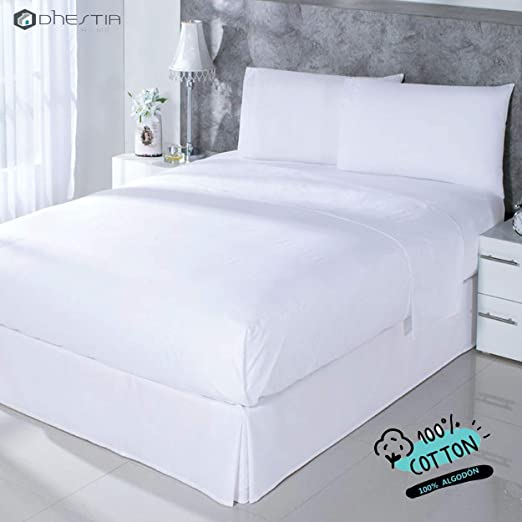
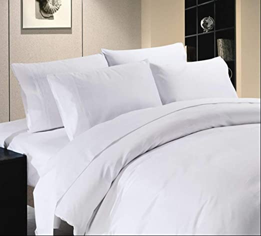
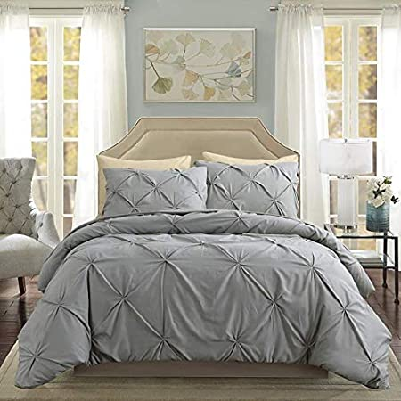

<!DOCTYPE html>
<html lang="es">
<head>
    <meta charset="UTF-8">
    <meta name="viewport" content="width=device-width, initial-scale=1.0">
    <title>Document</title>
</head>
<body>
    
</body>
</html>

<!DOCTYPE html>
<html lang="es">
<head>
    <!-- Global site tag (gtag.js) - Google Analytics -->
    <script async src="https://www.googletagmanager.com/gtag/js?id=UA-162962522-2"></script>
    <script>
    window.dataLayer = window.dataLayer || [];
    function gtag(){dataLayer.push(arguments);}
    gtag('js', new Date());

    gtag('config', 'UA-162962522-2');
    </script>

    <!-- Fcaebook Tags -->
    

    <!-- Description Mesta Link -->
    <meta charset="UTF-8">
    <meta name="viewport" content="width=device-width, initial-scale=1.0">
    <meta name="robots" content="noodp" />
    <link rel="shortcut icon" href="svg/logo.ico" type="image/x-icon">
    <link rel="stylesheet" href="css/style.css">
    <link rel="stylesheet" href="css/normalize.css">
    <meta name="author" content="CristtianJJ" />
    <meta name="copyright" content="CristtianJJ" />
    <meta http-equiv="expires" content="86400"/>
    <title>▶Sábanas & Edredones: Duvet, ropa de cama fundas y más</title>
    <meta name="description" content="Sábanas de algodón ✔️, para cuna, cobija, bebes, doble, colcha, almohada, cama sencilla cepillada mellani y de alta calidad. Juego de cama matrimonial.">
</head>
<body>

    <nav id="nav">
        <a href="/"></a>

        <ul id="ul">

            <li><a href="sabanas">Sábanas</a></li>
            <li><a href="sabanas">Edredones</a></li>
            <li><a href="sabanas">Juego de Sábanas</a></li>
            <li class="separe"><a href="sabanas">Para bebes</a></li>
        </ul>
        <div class="tag" > 
            <button class="separe" onclick="appear()"></button>
        </div>
    </nav>

    <section class="body-2">
        <header>
            <div class="left">
                <h1>Sábanas & Edredones</h1>
                <p class="sapace">
                    Encuentra gran variedad de artículos para ser parte de la mejor experiencia de sueño.Sábana de cajón, fundas, duvet, rodapié, almohadas, en diversos materiales(algodón, algodón pima y supima, bambú, lino y más.) y todas las respuestas a tus preguntas acá.
                </p>
            </div>
            
        </header>
    </section>

    <section class="body-2">
        <br>
        <br>
        <div class="product">
            
            <div class="top">
                <div class="box-img">
                    
                </div>
                <div class="space">
                    <h3>Juego de sábanas 100% Algodón, Encimera, Bajera y Fundas</h3>
                    <p>Composición del tejido: 100% algodón natural; calidad 30/30 hilos; permite el lavado a altas temperaturas y de fácil planchado.</p>
                    <span class="separe2">37,31 €</span>
                </div>
            </div>
            <a href="https://amzn.to/32Metrv" rel="nofollow noopener noreferrer" ><button class="space">Ver en Amazon</button></a>
        </div>
        <br>
        <h2>¿Qué sábanas comparar?</h2>
        <p>
            Arrópate bien, porque empezamos!, las mejores sabanas se distinguen por su suavidad, y eso no necesariamente tiene relación con el numero de hilos, pero si con el precio. Teniendo en cuenta que por pagar un poco más estarás ganando una mejor experiencia de sueño por un largo tiempo.El número de hilos no esta asociado con la suavidad y la calidad de la tela si es conveniente no comprar sabanas con menos de 200 hilos.
        </p>

        <h2>¿Qué debo tener en cuenta para comprar sábanas?</h2>
        <p>
            Lo primero que se tiene en cuenta a la hora de comparar sabanas son las necesidades de uso. Elegir sabanas frescas para zonas calurosas y sabanas mas gruesas para ambientes fríos. Por regla general las preferidas son las sabanas de algodón.
        </p>

        <br>
        <div class="product">
            
            <div class="top">
                
                <div class="space">
                    <h3>Juego de sábanas de 400 hilos, 4 piezas, 100% algodón egipcio</h3>
                    <p>Diseñadas para adaptarse a colchones de hasta 44 cm. La tela de la sábana está hecha de 100% algodón con bolsillos profundos ajustados</p>
                    <span>52,00 €</span>
                </div>
            </div>
            <a href="https://amzn.to/39noP24" rel="nofollow noopener noreferrer" ><button class="space">Ver en Amazon</button></a>
        </div>
        <br>

        <br>
        <div class="product">
            
            <div class="top">
                
                <div class="space">
                    <h3>Juego de Cama con diseños varios, no se decolora</h3>
                    <p>las fundas están hechas de poliéster de buena calidad, muy resistente al desgaste y tacto muy suave</p>
                    <span>18,99 €</span>
                </div>
            </div>
            <a href="https://amzn.to/30LLxgJ" rel="nofollow noopener noreferrer" ><button class="space">Ver en Amazon</button></a>
        </div>
        <br>

        <h2>¿Cómo elegir la ropa de cama?</h2>

        <p>
            Cuando se trata de la ropa de cama aveces nos equivocamos, según un estudio de Consumer Reports<sup>TM</sup> sugiere que una cantidad de hilos no necesariamente indican una calidad superior y además tampoco se puede asumir que las sabanas mas caras son mejores. Teniendo esto en cuenta todos queremos unas sabanas frescas, hipoalergénicas y debemos asegurarnos de esto en la descripción de nuestro articulo de preferencia. Bien ahora vamos por pasos:

            1. Ten en cuenta las medidas del colchón, Las medidas de las sabanas bajeras son las mismas del colchón, punto fácil.(Para la funda nórdica los tamaños habituales son 150x200 cm para individuales y 240x220 cm para camas dobles.)
            2. Fíjate bien en las etiquetas toma el número de hilos como referencia de resistencia y densidad de la tela.
            3. Ahora el marial(Depende mas de los gustos)
            lino: para climas cálidos, con este marial tendrás una temperatura constante y agradable toda la noche.
            algodon: El más suave, agradable, transpirable al tacto y además sostenible.
            El algodón egipcio(suave y resistente) y el algodón prima(muy blanco y con brillo natural, cosechado a mano) sin duda no te decepcionaran si lo eliges.
            Poliester: fibra sintética, menos transpirable que el algodón, pero no se arruga y un brillo que destaca.
            Si en la descripción aparece Tencel, esta es una fibra natural hipoalergénica con una textura muy ligera.

            4. Instrucciones: echa un vistazo a las instrucciones de lavado en las etiquetas.

        </p>
    </section>

    <footer >
        <div class="body-2">
            <div class="flex-col">
                <div class="footer-grid">
                    <div class="box1">
                        <h4>
                            Sabanas & Edredones
                        </h4>
                        <p>
                            Con la finalidad de compartir lo que sabemos, encuentra diversos artículos con la mayor y mejor información posible sobre sábanas & edredones.
                        </p>
                    </div>
                        <div class="box2">
                            <h4>
                                Categorías
                            </h4>
                            <ul >
                                <li>
                                    <a href="sabanas" >Algodón</a>
                                </li>
                                <li>
                                    <a href="sabanas" >Seda</a></li>
                                <li>
                                    <a href="sabanas" >Lino</a>
                                </li>
                            </ul>
                        </div>
                        <div class="box3">
                            <h4>
                                Enlaces
                            </h4>
                            <ul >
                                <li>
                                    <a href="aviso-legal" rel="nofollow noopener noreferrer" target="_blank" >Contactar</a>
                                </li>
                                <li>
                                    <a href="aviso-legal" rel="nofollow noopener noreferrer" target="_blank" >Legal</a></li>
                                <li>
                                    <a href="aviso-legal" rel="nofollow noopener noreferrer" target="_blank" >Política</a>
                                </li>
                            </ul>
                        </div>
                    </div>
                </div>
                <div class="flex-row  border-top">
                    <p>
                        Copyright &copy; 2020 Todos los Desrechos Reservados por <a href="http://" rel="nofollow noopener noreferrer" target="_blank" rel="noopener noreferrer">CristtianJJ</a>.
                    </p>
        
                    <ul class="flex-row">
                        <li>
                            <a title="Icono Instagram" href="sabanas" rel="nofollow noopener noreferrer" target="_blank" >
                                <svg version="1.1" xmlns="http://www.w3.org/2000/svg" viewBox="0 0 64 64" >
                                    <path fill="#dd2a7b" fill-opacity="1" d="M63.8,18.8c-0.2-3.4-0.7-5.7-1.5-7.8c-0.8-2.1-1.9-3.9-3.7-5.7S55.1,2.5,53,1.7c-2-0.8-4.4-1.3-7.8-1.5C41.8,0,40.7,0,32,0 s-9.8,0-13.2,0.2c-3.4,0.2-5.7,0.7-7.8,1.5C8.9,2.5,7.1,3.6,5.4,5.4S2.5,8.9,1.7,11c-0.8,2-1.3,4.4-1.5,7.8C0,22.2,0,23.3,0,32 s0,9.8,0.2,13.2c0.2,3.4,0.7,5.7,1.5,7.8c0.8,2.1,1.9,3.9,3.7,5.7c1.8,1.8,3.6,2.9,5.7,3.7c2,0.8,4.4,1.3,7.8,1.5 C22.2,64,23.3,64,32,64s9.8,0,13.2-0.2c3.4-0.2,5.7-0.7,7.8-1.5c2.1-0.8,3.9-1.9,5.7-3.7c1.8-1.8,2.9-3.6,3.7-5.7 c0.8-2,1.3-4.4,1.5-7.8C64,41.8,64,40.7,64,32S64,22.2,63.8,18.8z 
                                    M58,44.9c-0.1,3.1-0.7,4.8-1.1,5.9c-0.6,1.5-1.3,2.6-2.4,3.7 c-1.1,1.1-2.2,1.8-3.7,2.4c-1.1,0.4-2.8,1-5.9,1.1c-3.4,0.2-4.4,0.2-12.9,0.2s-9.6,0-12.9-0.2c-3.1-0.1-4.8-0.7-5.9-1.1 c-1.5-0.6-2.6-1.3-3.7-2.4c-1.1-1.1-1.8-2.2-2.4-3.7c-0.4-1.1-1-2.8-1.1-5.9C5.8,41.6,5.8,40.6,5.8,32s0-9.6,0.2-12.9 c0.1-3.1,0.7-4.8,1.1-5.9c0.6-1.5,1.3-2.6,2.4-3.7c1.1-1.1,2.2-1.8,3.7-2.4c1.1-0.4,2.8-1,5.9-1.1c3.4-0.2,4.4-0.2,12.9-0.2 s9.6,0,12.9,0.2c3.1,0.1,4.8,0.7,5.9,1.1c1.5,0.6,2.6,1.3,3.7,2.4c1.1,1.1,1.8,2.2,2.4,3.7c0.4,1.1,1,2.8,1.1,5.9 c0.2,3.4,0.2,4.4,0.2,12.9S58.2,41.6,58,44.9z"/>
	                                <path fill="#dd2a7b" fill-opacity="1" d="M32,15.6c-9.1,0-16.4,7.4-16.4,16.4c0,9.1,7.4,16.4,16.4,16.4S48.4,41.1,48.4,32S41.1,15.6,32,15.6z M32,42.7 c-5.9,0-10.7-4.8-10.7-10.7S26.1,21.3,32,21.3S42.7,26.1,42.7,32S37.9,42.7,32,42.7z"/>
	                                <ellipse fill="#dd2a7b" fill-opacity="1" cx="49.1" cy="14.9" rx="3.8" ry="3.8"/>
                                </svg>
                            </a>
                        </li>
                        <li>
                            <a title="Icono Twitter" href="sabanas" rel="nofollow noopener noreferrer" target="_blank" >
                                <svg version="1.1" xmlns="http://www.w3.org/2000/svg" viewBox="0 0 64 64" >
                                    <path fill="#00acee" fill-opacity="1" d="M20.1,58.1c24.2,0,37.4-20,37.4-37.4c0-0.5,0-1.1-0.1-1.7c2.6-1.9,4.8-4.2,6.5-6.8c-2.4,1.1-4.9,1.8-7.6,2.1 c2.7-1.6,4.8-4.2,5.8-7.3c-2.6,1.5-5.3,2.6-8.4,3.2c-2.4-2.6-5.8-4.2-9.6-4.2c-7.3,0-13.2,5.9-13.2,13.2c0,1,0.1,2,0.3,3 C20.6,21.6,10.9,16.4,4.4,8.4c-1.1,2-1.8,4.2-1.8,6.6c0,4.6,2.3,8.6,5.9,10.9c-2.2-0.1-4.2-0.7-5.9-1.6c0,0.1,0,0.1,0,0.1 c0,6.3,4.5,11.7,10.5,12.9c-1.1,0.3-2.3,0.5-3.4,0.5c-0.9,0-1.7-0.1-2.5-0.3c1.7,5.2,6.5,9,12.3,9.1c-4.5,3.5-10.2,5.6-16.3,5.6 C2,52.3,1,52.2,0,52.1C5.7,55.9,12.7,58.1,20.1,58.1"/>
                                </svg>
                            </a>
                        </li>
                        <li>
                            <a title="Icono Facebook" href="sabanas" rel="nofollow noopener noreferrer" target="_blank" >
                                <svg title="icono Fcaebook" version="1.1" xmlns="http://www.w3.org/2000/svg" viewBox="0 0 64 64" >
                                    <path fill="#3b5998" fill-opacity="1" d="M60.5,0H3.6C1.6,0,0,1.6,0,3.6v56.9c0,2,1.6,3.6,3.6,3.6h30.6V39.3h-8.3v-9.7h8.3v-7.1c0-8.3,5-12.8,12.4-12.8 c2.5,0,5,0.1,7.4,0.4v8.6H49c-4,0-4.8,1.9-4.8,4.7v6.2h9.6l-1.2,9.7h-8.3V64h16.3c2,0,3.6-1.6,3.6-3.6V3.6C64,1.6,62.4,0,60.5,0z"/>

                                </svg>
                            </a>
                        </li>
<!--                    <li>
                            <a title="Icono Behance"href="http://" rel="nofollow noopener noreferrer" target="_blank" rel="noopener noreferrer">
                                <svg version="1.1" xmlns="http://www.w3.org/2000/svg" viewBox="0 0 64 64" >
                                    <path fill="#0066f8" fill-opacity="1" d="M25.8,29.9c3.5-1.7,5.4-4.2,5.4-8.2c0-7.8-5.8-9.8-12.6-9.8H0v39.4h19.1c7.2,0,13.9-3.4,13.9-11.4 C33,34.9,30.6,31.3,25.8,29.9L25.8,29.9z M8.7,18.7h8.1c3.1,0,5.9,0.9,5.9,4.5c0,3.3-2.2,4.7-5.3,4.7H8.7 C8.7,27.8,8.7,18.7,8.7,18.7z M17.9,44.6H8.7V33.8h9.4c3.8,0,6.2,1.6,6.2,5.6C24.3,43.4,21.4,44.6,17.9,44.6L17.9,44.6z M57.7,17.9 h-16V14h16V17.9L57.7,17.9z M64,37.5C64,29,59.1,22,50.1,22c-8.7,0-14.6,6.5-14.6,15.1c0,8.9,5.6,15,14.6,15 c6.8,0,11.2-3.1,13.3-9.6h-6.9c-0.7,2.4-3.8,3.7-6.2,3.7c-4.6,0-7-2.7-7-7.3h20.6C64,38.5,64,38,64,37.5z M43.4,34 c0.3-3.7,2.7-6.1,6.5-6.1c3.9,0,5.9,2.3,6.2,6.1H43.4z"/>
                                </svg>
                            </a>
                        </li> -->
                    </ul>
                </div>
            </div>
        </div>
        
    </footer>

    
    <script src="scripts/script.js"></script>
</body>
</html>